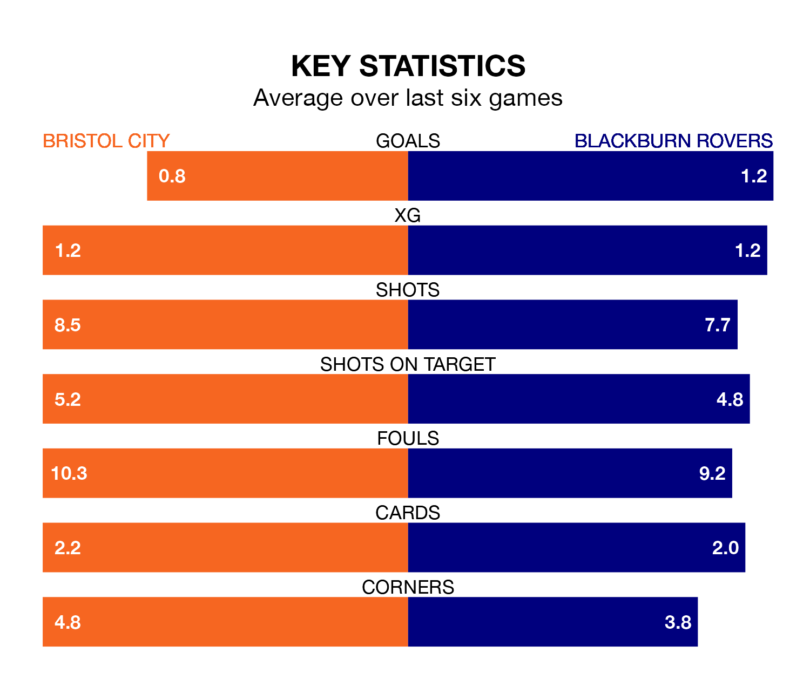

Bristol City host Blackburn Rovers on Wednesday at Ashton Gate in EFL Championship.
In their last league match, on Saturday, City drew with Sunderland 0-0 away.
Blackburn also drew, 0-0 at home against Southampton.
In Samuel Szmodics, Blackburn have the league's sharpest shooter so far this season. He has notched 23 goals in 39 appearances.
His goal rate of one every 150 minutes is quicker than that of Tommy Conway, City's top scorer with a goal every 280 minutes, and a total of seven goals in 34 games.
In the last 10 years, City and Blackburn have played each other on 15 occasions. City won six of them, Blackburn four, and they drew five times.
On average, the Robins scored 1.2 goals and Blackburn 1.1 in those matches.
Their last meeting was on December 12, when Blackburn won 2-1 at home.
With 44 goals in 41 games so far this season, the Robins are scoring at below the league average rate with 1.1 goals per game. But they are conceding fewer than average too, letting in 45 goals at a rate of 1.1 per game.
Rovers, meanwhile, are above average scorers, with 1.4 goals per game, compared to a league average of 1.3. They have conceded 1.6 goals per game.
The away side are 16th in the table after 41 games, of which they have won 12 and drawn 10, earning 46 points.
The hosts are four places ahead of Blackburn in 12th, with 15 wins and nine draws putting them on 54 points.
City are in mixed form in EFL Championship, with three wins and a draw from their last six games.
With a win and four draws over that period, Blackburn's form is worse – they have taken seven points from 18, compared to City's 10.
Wednesday's match will be refereed by Samuel Allison, who has taken charge of 14 EFL Championship games so far this season, issuing one red card and booking 51 players. He has awarded one penalty.
The last City game Allison refereed was a 1-0 home loss to Cardiff City on March 2. He is yet to oversee a match featuring Blackburn this season.
Updated: 11:20 (UTC), 09/04/24